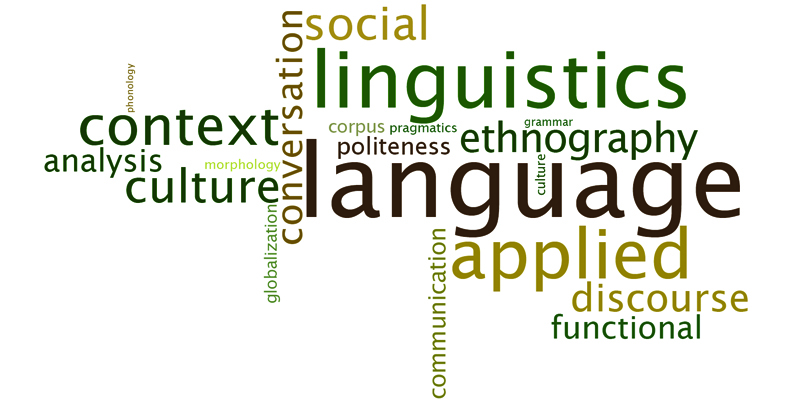
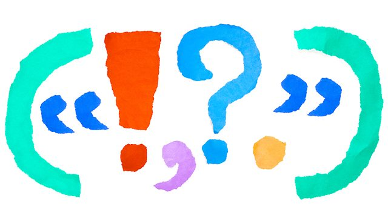

InclusiveLanguage
Inclusive Language
The more gender-inclusive your language is in writing, the less likely you are to alienate people or to perpetuate gender stereotypes. You can improve your use of gender-inclusive language by using some simple strategies when you write.
Learn MoreCommon problems in language construction

In most cases, it is written in the third person. Academic writing is usually formal and does not directly target the reader, thus avoiding the second person (you/you). Because it's too casual.Don't write, "If you read Romeo and Juliet,.
Learn MoreDos and don'ts of formal writing
You want the reader to find that you are credible. You want readers to respect you. If you are rude, arrogant or sarcastic, you will not be considered credible or respectable. Your tone should be formal and professional.Don't write, "If you're smart, you'll realize my solution is the best."Be sure to write, "Evidence demonstrates that this is the most effective solution."
Learn MorePunctuation

Check punctuation, formatting and citation errors.
Learn MoreQuoting, paraphrasing and summarising
Most academic writings need to use sources, and if you use sources, you must refer to sources. (Without quotation, you are plagiarism, so don't forget this step!)Before you start your research, of course, before you start writing, you need to know what citation style you need. Most academic papers use MLA or APA. However, these are not the only citation forms. You may also be asked to use other styles, including CSE or Chicago.
Learn MoreReference list

Most academic writings need to use sources, and if you use sources, you must refer to sources. (Without quotation, you are plagiarism, so don't forget this step!)Before you start your research, of course, before you start writing, you need to know what citation style you need. Most academic papers use MLA or APA. However, these are not the only citation forms. You may also be asked to use other styles, including CSE or Chicago.
Learn More- Dark Light